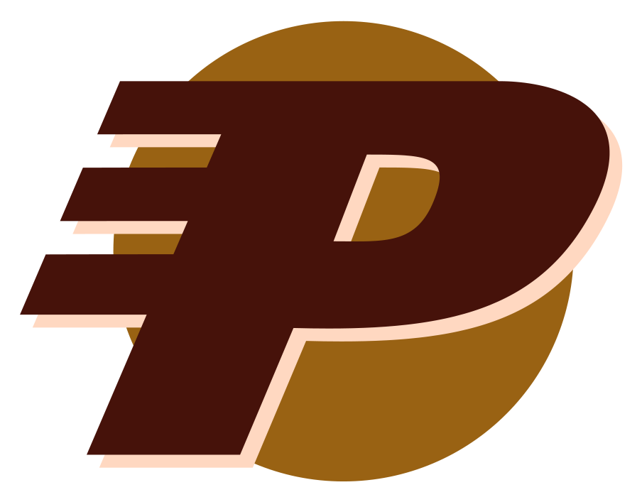

Poseidon Oil
ポセイドン・オイル
概要
ポセイドン・オイルは、ポセイドン・エネルギーの子会社であり、大戦前に活動していた。
ポセイドンは、市場シェアと利益率を維持するための攻撃的な戦略で知られていた。 子会社、関連組織、手先のネットワークはさまざまな形で運営されていた——「ポセイドン・オイル」や「ポセイドン・ガソリン」のような公然としたブランディング活動から、企業に数十億ドルの利益をもたらすために数百万ドルの報酬を受けるロビイストとの裏取引まで多岐にわたった。
背景
ポセイドン・カルテルの重要な一員であるポセイドン・オイルは、石油の採掘・精製、原子力、そして自動化を含む複数のエネルギー分野に多額の投資を行っていた。 強固なコーポレート・アイデンティティを持ち、ポジティブなパブリックイメージを維持していた。
しかし同時に、軍産複合体の一部でもあり、軍用グレードの兵器にアクセスできた。 これには艦艇防衛用の自動対艦砲やフレンドリーファイアを回避するためのIFF（敵味方識別）トランスポンダー、その他の高度なセキュリティ対策が含まれていた。 すべてのポセイドン・オイル施設は、大陸をまたぐカルテルの統合ネットワーク「PoseidoNet」に接続されていた。
— A・ロン・マイヤーズ（Fallout 2）
ポセイドンは自動化に多額の投資を行い、ナビゲーションコンピュータが作動している限り完全に自律航行可能なタンカーを運用し、ゲッコーの原子力発電所を含むポセイドン施設の自律的な維持管理が可能な完全自動メンテナンス・修理ロボットを実装していた。
資産
この企業に属する主要施設は以下の通りであった：
- 原子炉第5号（ゲッコー） — ゲッコーの町にある原子力発電所。PoseidoNetに接続されていた。
- ポセイドン・オイル・リグ — 大統領用核シェルター「PR_002」に転用され、大戦後はエンクレイヴの西部における主要本部となった。選ばれし者によって破壊されるまで使用された。
- ナバロ精製所 — カリフォルニア沿岸に位置する精製施設。PoseidoNetに接続されていた。
- PMVバルディーズ — 石油タンカー。航行可能な船舶であり、石油リグへのアクセスによりエンクレイヴ打倒において重要な役割を果たした。
登場作品
ポセイドン・オイルはFallout 2に登場し、Fallout BibleおよびFallout: The Roleplaying Gameで言及されている。また、ブラック・アイル・スタジオが開発中止したFallout 3であるVan Burenでも言及される予定だった。
舞台裏
- ポセイドン・オイルはVan Burenで小さな役割を果たす予定であり、マクソン・バンカーの資金源の一つ、およびティベッツ刑務所の接収に関わるものだった。
- クリス・アヴェロンはFallout Bible 8でポセイドンの企業慣行について見解を述べた：
- PMVバルディーズは核融合エネルギーに改装されていない非常に古い船であった。
- ポセイドン・オイルは（戦前の時代には）たとえ実用的であっても、自社のタンカーに核融合セルを使わせようとはしなかっただろう——それは会社のイメージに反するからである。おまけに、あれほど巨大なものがあれほど小さなもので動くという事実は、会社の自信を傷つける。
- 燃料の入手がゲームプレイ上の冒険の種（シーやハボロジストとの取引）を提供し、資源戦争の切迫感を強調する役割も担っていた。
- 船名は現実のエクソン・バルディーズ号原油流出事故への言及である。
ギャラリー


ポセイドン・エネルギーの中核をなす石油部門。
「会社のイメージに反するから核融合セルを使わない」というアヴェロンの舞台裏解説は、Fallout世界の企業文化の矛盾を見事に表現しています。
実用性よりもブランドイメージ——枯渇しつつある化石燃料にしがみつく企業体という構図が、まさに資源戦争の本質を象徴していますね。
PMVバルディーズの名前がエクソン・バルディーズ号事故への皮肉な言及というのも、Falloutらしいブラックユーモアです。
この記事は Nukapedia (Fallout Wiki)の「Poseidon Oil」の記事を日本語に翻訳し再構成したものです。
原文は Creative Commons Attribution-ShareAlike (CC BY-SA) ライセンスのもとで利用しています。
© Bethesda Softworks LLC. Fallout およびすべての関連ロゴ・名称は Bethesda Softworks LLC の登録商標です。
COMMENTS